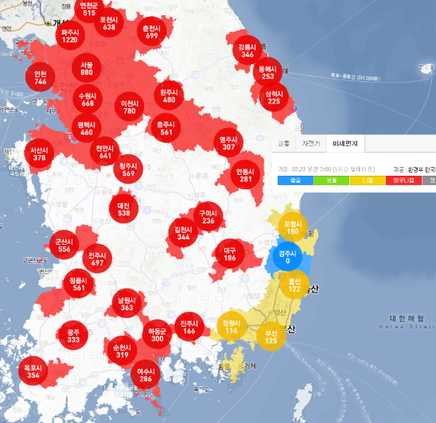

자기소개 :
안녕하세요. 명지대학교 융합소프트웨어학부 19학번 함범준입니다.
만들고 싶은 IT서비스 :
'미세먼지 지도'를 만들어 현재 전국별 미세먼지 분포현황과 분포속도, 언제쯤 사라질 지 등을 사람들에게 빠르고 정확하게 제공하는 서비스를 만들고 싶습니다.

* 처음에 전국적인 미세먼지 분포현황을 보여주고, 각 시를 클릭하면 구체적인 도시의 미세먼지 분포현황을 보여줍니다.